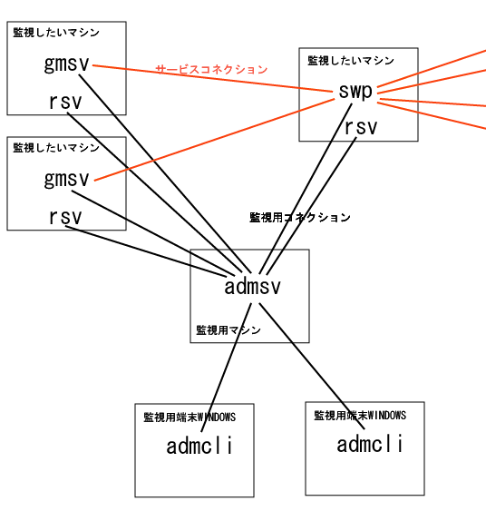

[トップ] [変更履歴]
[目次] [用語] [FAQ] | [AdmCli]
[ADMSV] [RSV]
| [VCE-Log] [VCEモニター]
VCE admin tool について
VCE admin toolの目的
VCE admin tool の目的は， VCEを利用したサーバーアプリケーションおよび， システム全体の管理を簡単にすることです．
VCE admin tool ソース配布キット
VCE admin tool はソースコードで配布されます． ただし，CE が本体をバージョンアップし続けるので， アプリケーション開発側は， 「プラグイン」や「VCE
monitor API」を通して各種機能を実装しておくと， 将来のバージョン相違問題を回避することができます．
なお、ソースのbuildには、VCEのビルドできる環境, ruby-1.6.8以上が必要です
現在の進行状況
現在 VCE admin tool の開発状況は，骨組みの設計と実装が終了 したところです． 実装済機能とそうでない機能は、以下の通りです。
過去のバージョンからの変更は、変更履歴を参照して下さい。
実装済の機能
- 各ホストの情報の取得
- 各プロセスのdead/aliveの確認
- 各プロセスの起動、停止
- ユーザーによる権限の制限
- 各プロセスのログを統一的に取得
- 各プロセスのログのリアルタイム監視(grep likeな検索)
未実装(実装予定)の機能
VCE admin toolの構成要素
VCE admin tool は以下の部分から成りたっています．
- admcli
InnovaDSXP.OCX というDLLを使って作られた GUI インターフェイスで す． admsvに接続して，最新情報を表示したり， 操作をしたりします．
- admsv
管理用サーバープログラムです． サーバーサイトのどこかに設置され，常時起動し， 各サーバーと，rsvに接続し，情報を収集します． チャットなどの機能もここで実現します．
- rsv
管理したい各マシンに1個づつこのプロセスを走らせます． 専用の SSHサーバーのようなもので， アプリケーションの外側，マシン自体を監視します． gmsv
を起動したりマシン全体の負荷を見るするのはrsvです．
- VCE monitor API
各サーバーアプリケーションのプログラムでは このAPIを使って， モニターされる側として実装すべき機能を実装し，登録します．
コマンドの実装のしかたについては, モニターコマンドについて を参照してください。
- VCE Log API
ログを統一的なフォーマットで出力するAPIです。
また、ログをadmsvで検索できるようにrsvに転送するLog WriterAPIも含みます。
- debug_print.c
VCE-Log, VCE-Monitorを実装するためのスケルトンコードです。
このコードを使用しなくても、VCE-Log, VCE-Monitorは利用可能ですが、使用することをお勧めします。

パッケージの展開
- admin_2003_07_15.tgz といった配布パッケージを適当な場所で展開する
- admin ディレクトリができるので，その中で make を実行
- admin/cli ディレクトリの中にクライアントがあるので それをコンパイル(admcli.sln)
マシン構成について
gmsv,swp,admsv,rsv など複数のサーバーを同じマシンに同居させることも可能です． 信頼性のためにそれぞれを別のマシンに分散させることも可能です．
プロジェクトにとって最適な配置をしていくことが大切ですが， 冒頭の図で説明したような構成が典型的です．
使用される単語について
VCE admin tools 内で使われる単語についてを参照してください。
Copyright 2000-2005 CommunityEngine Inc. All rights reserved.